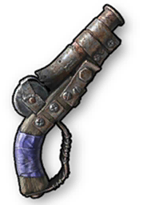
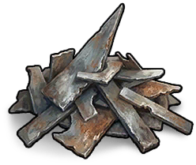

氧化物生存岛
百科全书
物品
玩法
回收
攻击力
防御力
治疗
威胁
关于
语言
中文
English
日本語
한국어
Français
Deutsch
Español
Português
Русский
中文
English
日本語
한국어
Français
Deutsch
Español
Português
Русский
首页
/
武器
/
管式手枪
武器
管式手枪
Pipe Pistol
物品 · 武器

Pipe Pistol / 武器
攻击力
90.0
制造配方
制造配方

金属碎片
Metal Fragment
×15
→
废料
Scrap
×10
→
布
Cloth
×10
→
获取方式
获取方式
掉落
可通过掉落获得
奖励/商店
可通过奖励或商店获得
回收产物
回收产物
金属碎片
Metal Fragment
×8
→
废料
Scrap
×4
→
布
Cloth
×2
→
物品说明
在极近距离内有效。应该能开火。大概吧…… 使用：自制弹药。